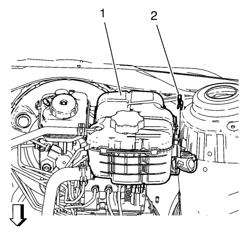

Sustitución del tubo delantero del cilindro del actuador del embrague — LHD - MZ0,MZ4,MR5,MF3
Procedimiento de desmontaje
- Desmonte la bandeja de la batería. Consultar Sustitución de la bandeja de la batería .

- Desmonte el clip (2) del vaso de expansión del radiador.
- Desmonte el depósito de expansión del radiador (1) y colóquelo a un lado.
- Coloque debajo un recipiente.
- Suelte los 2 seguros del tubo delantero del cilindro actuador del embrague (2).
- Abra el clip de sujeción (1).
- Desconecte el tubo delantero del cilindro actuador del embrague del codo del tubo del cilindro actuador del embrague.
- Desmonte dos pernos del soporte de la válvula del modulador de presión de los frenos (1).
- Abra el clip de sujeción (flecha).
- Desconecte el tubo delantero del cilindro actuador del embrague (1) del cilindro transmisor del embrague.
Nota: Para desmontar el tubo delantero del cilindro del actuador del embrague, levante cuidadosamente el soporte de la válvula del modulador de presión del freno.
- Quite el tubo delantero del cilindro actuador del embrague.
Procedimiento de montaje
Nota: Para montar el tubo delantero del cilindro del actuador del embrague, levante cuidadosamente el soporte de la válvula del modulador de presión del freno.
- Monte el tubo delantero del cilindro actuador del embrague.
- Conecte el tubo delantero del cilindro actuador del embrague (1) al cilindro transmisor del embrague.
- Cierre el clip de sujeción (flecha).
- Conecte el tubo delantero del cilindro actuador del embrague (2) al codo del tubo del cilindro actuador del embrague.
- Cierre el clip de sujeción (1).
- Fije el tubo delantero del cilindro actuador del embrague con 2 seguros.
Precaución: Consulte Precaución con las fijaciones en la sección Prólogo
- Monte 2 pernos del soporte de la válvula moduladora de la presión del freno (1) y apriételos con 20 N·m (15 lib. pie).
- Monte el depósito de expansión del radiador (1).
- Monte el clip (2) en el vaso de expansión del radiador.
- Purgue el sistema del embrague hidráulico. Consultar Purga del sistema de embrague hidráulico .
- Monte la bandeja de la batería. Consultar Sustitución de la bandeja de la batería .
| © Copyright Chevrolet. Reservados todos los derechos |